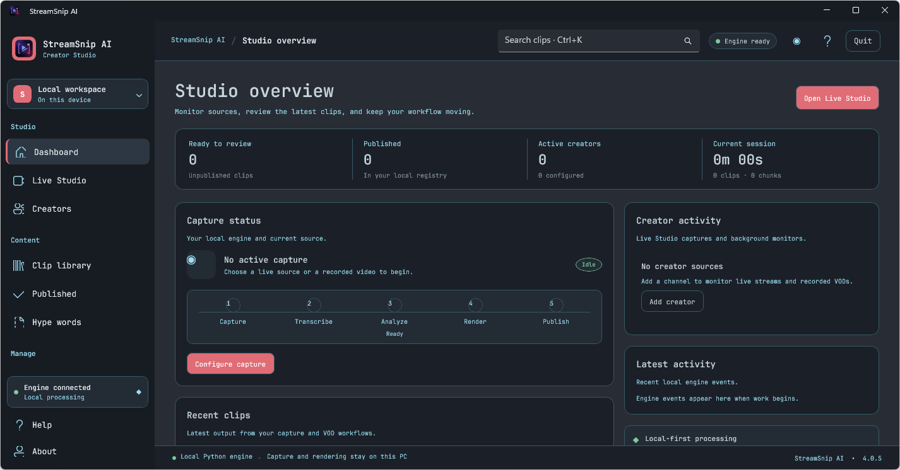
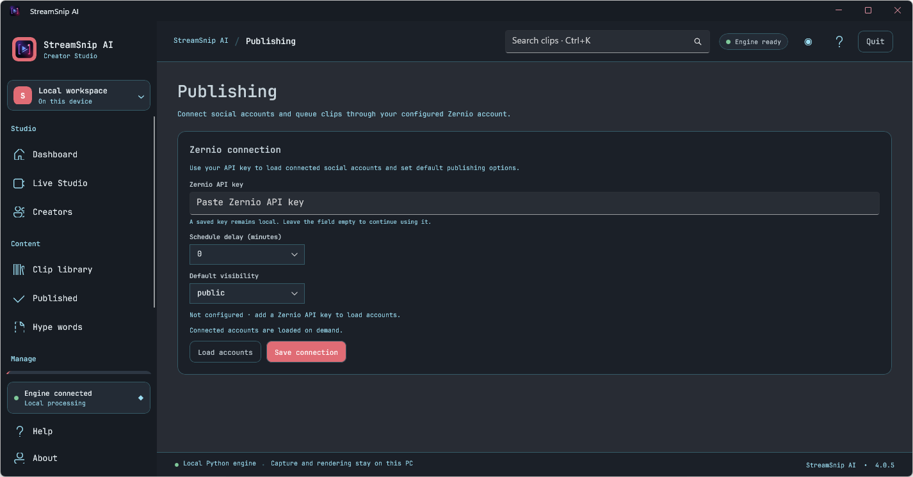

Capture
Choose a supported live stream, saved creator, recorded VOD, or local video.
Capture live streams. Find the moments worth keeping. Turn them into clips you can review, refine, and publish — from one native Windows workspace.

StreamSnip connects capture, transcription, highlight analysis, framing, rendering, and publishing in one predictable session. Start and stop capture yourself; inspect the result before it leaves your machine.
Choose a supported live stream, saved creator, recorded VOD, or local video.
Transcribe speech and score candidate moments with the provider you choose.
Frame facecam and gameplay, choose a format, style captions, and render.
Check the clip and metadata, choose destinations, and publish through Zernio.
Choose a source, review the capture settings, set your AI provider and transcription model, and tune captions before starting. Live capture is an explicit action, not something that begins because a page opened.

Keep saved channels organised instead of mixing everything into one recording folder. See who is monitored, what is recording, and where that creator’s live and recorded-VOD work belongs.

Less hunting.
More making.
The point is not to generate an endless pile of files. It is to help you find a moment, turn it into a clean edit, and make a deliberate decision about what gets published. Your recordings and unfinished clips remain organised for review.
Review rendered videos with their matching title and description. Keep unpublished work in the active Clips area and confirmed posts in the separate Published area. Remove individual clips or manage selections without losing track of their source.

Connect your Zernio API key, discover the social accounts available to that connection, and choose destinations for each clip. StreamSnip checks and records each destination separately so partial outcomes remain visible.

The native WinUI 3 desktop shell supervises a local Python engine. Capture, files, transcription, facecam detection, and FFmpeg rendering stay on your computer. Hosted services are used only when you select and configure them.
 Ollama
Ollama
 Gemini
Gemini
 Hugging Face
Custom AI endpoint
Zernio
Hugging Face
Custom AI endpoint
Zernio
Download the native Windows installer from GitHub Releases. The setup checks for a compatible Python runtime, FFmpeg, application dependencies, and speech models — reusing valid components and installing only what is missing or incompatible.